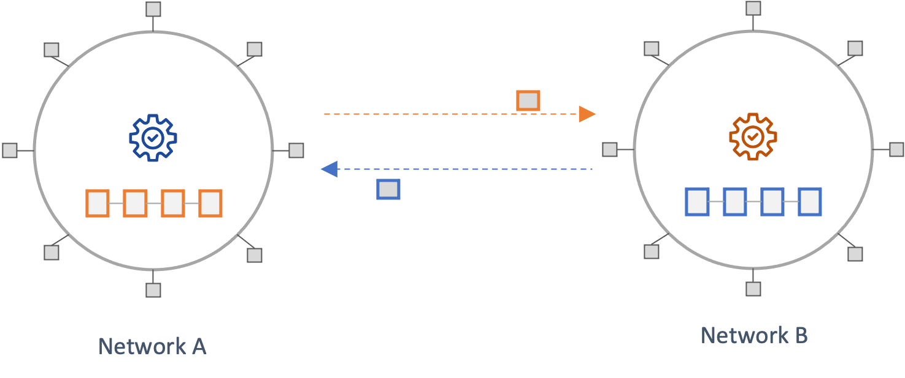
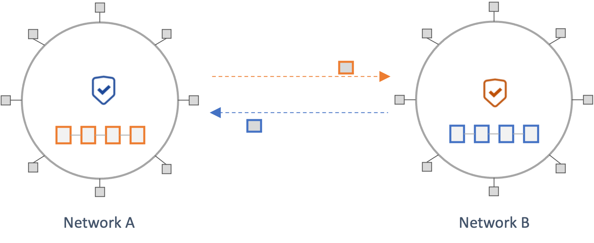
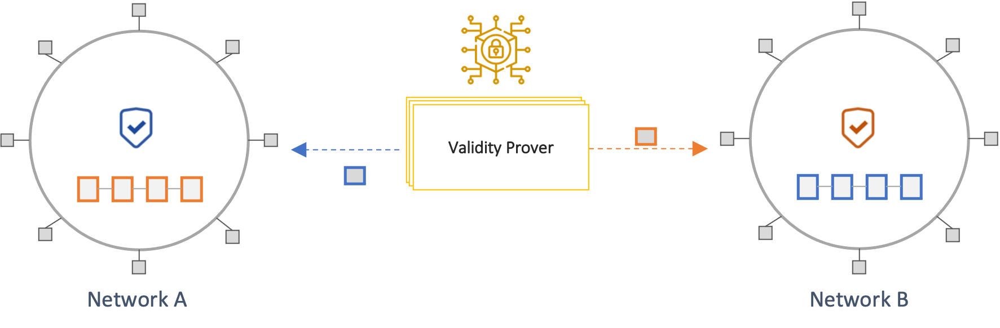
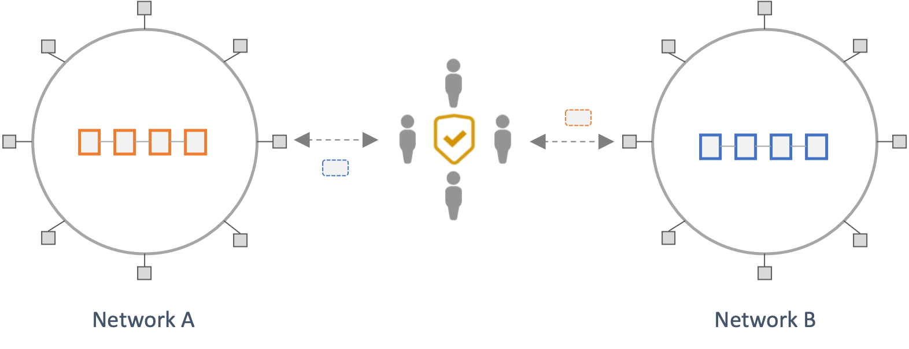
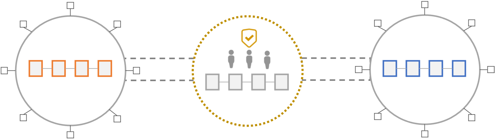

Protocol Architecture Risk
Risks that stem from the security properties, assumptions, trade-offs, and limitations of the design of a protocol are collectively referred to as Protocol Architecture Risks. To methodically analyze protocol architecture risk, we first discuss a conceptual model for organizing crosschain protocols into layers of abstraction based on scope and functionality. The framework is primarily based on the work by L2Beat and Socket and is illustrated in the diagram below. In this framework, each layer depends on layers below it for functionality and security. Hence, the architectural risks at each layer subsume those below it.

Messaging Protocol
Messaging protocols provide the following two foundational capabilities that are relied upon by crosschain applications built on top of them.
- Transmission of state information from a source network to a destination network in a timely manner
- Ensuring the validity and finality of any information sent from a source network to a destination network
Messaging protocols must ensure the transmission of all crosschain messages (capability 1) while providing strong guarantees about their validity and finality (capability 2) in the source network. The former mainly highlights liveness and censorship resistance property, while the latter emphasizes safety. The architecture of crosschain protocols is largely differentiated by how they offer guarantees around safety. An ideal construction would introduce no additional trust assumptions beyond what is assumed about the underlying networks. For a message sent from a source network to a destination network, this would involve the destination networks independently:
- Validating that a state transition that resulted in a given message is valid according to the state transition rules of the source network and
- Verifying that the message has been finalized according to its consensus rules of the source network
A protocol that performs one or both of the above verifications to ensure the validity of a remote network's state is considered trustless or trust-minimized. Conversely, a protocol that relies on intermediaries or a subset of network validators vouching for the validity of a remote state is considered trusted, or semi-trusted. In line with this, four broad architectural patterns are identified below. Not all crosschain protocols in the wild neatly fit into these categories, and some employ hybrid approaches.
State Validating Protocols
In State Validating Protocols, a destination chain independently verifies that any state it receives is valid and final according to the source network's state transition and consensus rules. This model inherits the security guarantees of the underlying networks without introducing new trust assumptions.
The only examples of such architecture, at present, are the native bridges between layer-one networks and their associated rollups (Optimistic and Zero-Knowledge rollups). In such models, there is, in effect, only a single source of truth, the state of the layer-one network. This is different from crosschain communication across independent layer-one networks. Hence, while this model offers significant security advantages, applying it across separate networks is currently not viable. However, with advances in Zero-Knowledge cryptography, this could change. Efforts such as stateless Ethereum focus on having succinct proofs of the network's state that clients can independently verify. An example of a protocol that offers similar properties is the Mina protocol. Such capabilities could eventually enable state-validating protocols across distinct layer-ones.

Considerations: While this approach offers strong security guarantees from a design perspective, it is worth noting that implementation and operational risks are still present.
Consensus Verifying Protocols
In Consensus Verifying Protocols, a destination network independently verifies that a crosschain state has been finalized according to the consensus rules of the source chain. This is typically achieved by running the light-client protocol of the source chain on the destination chain. Examples of this type of verification include checking that sufficient proof-of-work has been expended on a block, in the case of Proof-of-Work protocols, or that a quorum of network validators has signed a block in BFT-based protocols. Similar to State Validating protocols, this approach does not introduce new trust assumptions beyond what's employed by the underlying network protocols.
However, light-client consensus verifications differ from the consensus verifications performed by full nodes and do not offer the same security guarantees. For instance, the Ethereum light-client protocol relies on verifying the attestations of a small subset of randomly selected validators, called the sync committee, in place of the complete Casper FFG consensus protocol employed by full nodes. Because of the smaller size of this validator set and the lack of slashing, this model offers relatively weaker security guarantees. In addition, unlike State Validating Protocols discussed above Consensus Verifying Protocols do not execute and verify the validity of transactions and hence offer lesser security.
A significant constraint to the overall viability of such approaches is the complexity associated with building and maintaining such protocols and the costs associated with operating them. In addition, the cost of running such infrastructure is a function of the source network's block production rate rather than the demand for crosschain messaging. Hence, such bridges might need to charge high fees and gain significant usage to offset operational costs.
There are two distinct models of such protocols based on whether the consensus verification is performed on-chain or off-chain.
On-chain Consensus Verification
This model involves performing light-client verification of a source chain's consensus in the execution environment of the destination. First, block headers from a source network are sent to a destination network by off-chain actors called Relayers. The destination chain then performs consensus verification on the block, typically through logic implemented in a smart contract. A user can then prove that a state exists in the source network using a Merkle proof against the verified block header on the destination. This proof can then be used to trigger a subsequent transaction on the destination chain.
Because of the constraints of most smart contract languages and blockchain execution environments, such models can be complicated to build and prohibitively expensive to operate (e.g., gas costs).

Considerations:
Safety:
- What are the security properties of the light-client protocols of the underlying networks?
- How does the protocol deal with the security limitations and potential attack vectors of the associated light-client protocols (e.g., Eclipse Attacks, Long-range attacks)? What is the likelihood of such attacks?
- How long can the bridge go without receiving new blocks before the bridge's security is affected?
- The increased complexity of building such protocols significantly increases implementation risk.
Liveness:
- Is the role of relaying blocks across chains permissionless? If the role is permissioned, then Relayers can censor or delay transactions.
- What are the costs of operating the bridge? Are these sustainable under low-demand scenarios?
- What are the financial incentives for relayers? Given these entities incur network fees associated with relaying blocks to different destination networks, how are they compensated? Is this model sustainable?
Other:
- Can the on-chain implementation adapt to changes in the source network's consensus protocol? What are there challenges and constraints to making such changes?
Validity-Proof based Consensus Verification
In this model, an off-chain system called a Prover generates a SNARK proof that a state in a source network has been finalized according to its consensus protocol. The proof is sent to a destination chain, which then verifies its validity using logic implemented in a smart contract (Verifier). Hence, this model shifts most of the complexity and cost of performing light-client consensus verification off-chain while retaining the security advantages of crosschain consensus verification.
These types of bridges are also referred to as Zero-knowledge Bridges (ZK Bridges). However, this terminology is misleading, as such protocols rely only on the succinctness properties of SNARKs and do not apply information hiding (i.e., Zero-knowledge).

Considerations:
The same considerations as those laid out for On-chain Consensus Verification schemes apply to these protocols. Additional considerations include:
Safety:
- What are the trusted setup assumptions of the underlying cryptographic mechanisms?
- The increased complexity of building such protocols increases implementation risk.
Liveness:
- Is the role of prover permissionless? If not, how many provers are there? What are the criteria for becoming a prover? How are they coordinated?
- Provers can technically censor transactions or become a source of liveness issues for the network
- Carrying out an eclipse attack against a single prover is more tractable than several provers
- How are provers incentivized?
- The computations performed by a prover can be expensive, which might discourage participation.
Third-party Attestation Protocols
The above approaches derive their security guarantees from the underlying chains because they involve each chain locally verifying, to some extent, the validity of the state from another chain. This avoids introducing additional trust assumptions and offers better security guarantees. However, such protocols are complex and costly to build, operate, and scale across diverse ecosystems.
Hence, most crosschain protocols introduce intermediary sources of trust in the form of third-party attestors (also referred to as validators). These third-party attestors attest to the validity of crosschain messages from a source network and then send them to a destination network. A destination network accepts as valid any state that is certified by a majority of the trusted third-party attestors. Hence the safety and liveness properties of such protocols rely on a threshold of honest attestors (M of N security model).


Protocols in this category vary widely on at least the following three dimensions:
- Coordination mechanism: Off-chain communication, Dedicated intermediary network
- Cryptographic mechanism: Multi-Signature, Threshold signature, Trusted Execution Environment (e.g., Intel SGX)
- Security model (Proof-of-Authority, Proof-of-Stake)
The security model of these protocols defines the security properties of and assumptions about the third-party attestors. There are generally two models, Proof-of-Authority and Proof-of-Stake, which are further discussed below.
Proof-of-Authority
Proof-of-Authority models rely on reputable legal entities serving as attestors. These bridges assume that a) such parties are strongly incentivized to maintain their reputation and would thus not act maliciously and b) that in the event of misbehavior, stakeholders can pursue legal recourse against such entities. These assumptions are difficult to reason about and rely on external structural assurances (e.g., legal systems) instead of internal protocol mechanisms.
Considerations:
Safety:
- How many distinct attestors does the protocol have? What are the specific honesty threshold assumptions for guaranteeing safety and liveness? What are the particular characteristics of the cryptographic schemes used?
- How reputable are these entities? How important are trust and reputation to the operation of the businesses of these entities?
- Are there contractual terms governing the operation of these entities? In what jurisdictions are the entities domiciled?
- How do the above disincentives to misbehavior compare against the TVL or total volume transacted by layers atop the messaging bridge?
- Can the claims around decentralization be verified on-chain? For instance:
- The number of validators and the threshold for achieving a quorum. Multi-signature schemes are easier to verify on-chain compared to MPC or threshold signature schemes.
- The active validator set. While a bridge might employ many validators, it is possible that only a few actively participate in validating and attesting to messages. This could be because the economics of validating messages are not worthwhile to some validators. This means that the effective validator set is smaller, and the decentralization and security guarantees of the bridge weaker. The Ronin bridge hack highlights an example of this scenario.
Liveness:
- Can regulations coerce these entities to censor transactions?
- Do such entities have competing interests with users of this bridge? e.g., Trading firms that might benefit from cross-domain MEV?
Proof-of-Stake
Proof-of-Stake models rely on validators having financial incentives to behave honestly according to the rules of the protocol. This is typically achieved by having each validator stake funds in the protocol that can be slashed if the validator misbehaves. Unlike proof-of-authority schemes, this offers an immediate and in-protocol method of punishing malicious behavior.
Considerations:
Safety:
- How many distinct attestors does the protocol have? What are the specific thresholds for guaranteeing safety and liveness? What are the particular characteristics of the cryptographic schemes used?
- Can the claims around decentralization be verified on-chain? For instance:
- The distribution of staked tokens across validators (i.e., concentrated amongst few parties vs. diffuse across many parties)
- The number of validators and the threshold for achieving a quorum (multi-signature schemes might be easier to verify on-chain than threshold signature schemes).
- The active validator set. While a bridge might employ many validators, it is possible that only a few actively participate in validating and attesting to messages.
- What exactly is staked by validators? Is it a bridge-specific token? What are the dynamics that drive the value of such tokens? How liquid is the token?
- How does the value of staked funds compare against the volume of assets transacted across the bridge?
- What is the cost of bribing or corrupting a threshold of such validators to violate safety or liveness?
- How does the bridge adapt to active misbehavior by a portion of the validators?
Liveness:
- Can regulations coerce these entities to censor transactions?
- Do such entities have competing interests with users of this bridge? e.g., Trading firms that might benefit from cross-domain MEV?
Optimistic Protocols
Optimistic crosschain protocols rely on two types of bridge validators, Attestors and Watchers. These validators have different names in different protocols. Attestors certify the validity of crosschain messages from a source network and submit them to destination networks. Attestors lock some stake in the source network that can be slashed in the case of proveable misbehavior. Watchers observe these attestations on-chain and submit fraud proofs within a time window if they are invalid. If invalid attestations are submitted, the responsible attestors are slashed, and the watcher that reported the fraud is rewarded. The Watcher role can either be permissioned or permissionless.
Such bridges assume that: a) attestors are incentivized to sign only legitimate transactions because their bonded funds will be slashed if not, b) if an attestor signs a fraudulent transaction, at least one honest watcher will report the fraud within the allotted fraud window, and c) watchers are disincentivized from submitting invalid fraud reports.
Thus, optimistic bridges have a 1 of N security model, which relies on one honest actor watching the system to verify crosschain transactions correctly. A large number of active watchers increases the security of such protocols. An ideal construction of such a protocol involves a permissionless watcher set. Such a model would make it difficult for an attacker to bribe a set of known watchers to overlook fraud. However, a permissionless watcher set might involve notable liveness tradeoffs for some protocols.
Considerations:
Attestors:
- How many attestors are employed by the bridge to sign and validate transactions? Is this set of attestors centralized? If so, can the attestors conduct a Denial-of-Service (DoS) attack by not signing a Merkle root? In such cases, will the system halt?
- What exactly is the bonded stake of attestors? Is it a bridge-specific token? What are the dynamics that drive the value of such tokens?
- What is the cost of bribing or corrupting the attestors to violate safety? Is this correlated with the price of a token?
- Can attestors censor messages? Can such entities be removed from the set of attestors to prevent censorship?
- How will the liveness of an application be affected if an attestor faces downtime? Will the application stop receiving messages?
Watchers:
- Is the watcher role permissionless?
- If not, how many watchers are watching the network to detect fraudulent transactions?
- Is this role decentralized in terms of the distinct entities involved? Are watchers geographically distributed and operating for high availability? Are there ways of verifying that these entities are active?
- How are watchers incentivized? Is the model sustainable? How does the protocol ensure watchers do not get front-run?
- Is the optimistic bridge “spam-proof” – meaning can an actor watching the system arbitrarily dispute transactions without penalty? Can such actors permanently halt a communication channel by spamming it?
- Can watchers censor messages? Can such entities be removed from the set of actors watching the system to prevent censorship?
- Do the actors watching the system have competing interests with users of the bridge? e.g., trading firms that could benefit from front-running a significant volume crosschain transaction or from cross-domain MEV?
A number of protocols employ a hybrid approach to bridging that leverages different approaches for a more robust crosschain solution. For example, Celer Inter-chain Message (Celer IM), utilizes a proof of stake approach by default but offers an optimistic-rollup inspired security model as a fallback solution in the worst-case scenario where validators behave maliciously in the PoS approach.
Coordination Protocols
Coordination Protocols allow applications to be spread across blockchains. They allow functionality and data on one blockchain to be combined with functionality on another blockchain. They allow state to be updated across two or more chains atomically, or for actions to occur on one chain based on the state of a contract on another chain.
General Purpose Atomic Crosschain Transaction (GPACT) (github) and Cross Framework are examples of Coordination Protocols. Both are a type of two-phase commitment protocol. The first phase executes segments of the crosschain execution on various chains, recording a set of provisional state updates to be applied. The end of this phase is to request that the crosschain transaction be committed. The second phase performs the update; applying the provisional state updates. If the second phase did not complete, then it is reapplied as many times as needed to complete the algorithm. If in the first phase any segment of the crosschain transaction fails, then the second phase is to discard the provisional updates on all chains.
The Tree Two Phase Commit protocol is a variant of the two-phase commit protocol that aims to better utilise underlying communications infrastructure. The participants in a distributed transaction are invoked in an order defined by a tree structure, where the root of the tree is the instigator of the transaction and is called the coordinator. The coordinator is responsible for managing the two phases of the commitment protocol. This idea of a coordinator managing the protocol is where the term Coordination Protocol comes from.
Coordination Protocols sit on top of crosschain messaging protocols. They rely on the messaging protocols to honestly provide information about events that have occurred on remote chains. For example, a segment of a crosschain transaction could execute and have provisional updates. The coordination protocol would rely on messaging protocols to communicate this information to the coordination contract on a remote chain such that the information can be trusted.
Considerations:
- Coordination protocols rely on messaging protocols communicating information from remote chains honestly.
- The messaging protocol used to prove events occurred on one chain may be different from that used to prove events occurred on other chains, despite all of the chains being involved in the same crosschain transaction. Having multiple messaging protocols, one for each chain information will be transferred from, will increase the complexity of the overall crosschain system.
- The configuration parameters for the messaging protocols will be chain specific. For instance, the finality time for transactions on different chains will depend on the consensus protocol and other security parameters of the chain. Having this chain specific configuration increases the complexity of the overall crosschain system.
- Coordination Protocols require at least two transactions per chain where updates occur, and the chain which acts as the coordination point also has at least two transactions. This is in contrast to simplistic crosschain protocols that don't provide atomic updates across chains that require only one transaction per chain. The increased number of transactions means that the latency for applications using these protocols will be higher than for simplistic non-atomic protocols.
- The incentivization at the application level must be designed such that parties executing the crosschain transactions for the application are incentivised to unlock all provisional state updates on all chains, irrespective of the outcome of the overall crosschain transaction (that is committed or discarded).
- Different coordination protocols provide different features and different security
guarantees. Understanding the differences is important as the protocols are not
interchangeable. For example:
- True atomicity: Some protocols (Cross Framework) do not provide true atomicity. They rely on segments being executed on each chain, and then being reversed if there is a failure on any chain. This is in contrast to other protocols (GPACT) that provide locking and true atomicity. Not providing true atomicity means that other transactions may interact with the transaction state prior to it being rolled-back.
- Isolation: Crosschain transactions are executed concurrently with other transactions. That is, there could be multiple transactions reading from and writing to the state of the same contract while a crosschain transaction is in progress. This occurs because the segments of crosschain transactions are not all executed simultaneously, and are executed as a two phase commitment protocol. Isolation ensures that concurrent execution of transactions leaves the contract state in the same state that would have been obtained if the transactions were executed sequentially. For coordination protocols this comes down to the locking mechanisms provided by the protocol: lock on write, lock on read, or no locking.
- Function call returning values: Some protocols allow function call return results whereas others do not provide this capability.
Token Bridges
One of the most common crosschain use cases is the transfer of assets from one network to another. This enables assets in one network to be used inside applications in another. For instance, a user might want to transfer her ETH from Ethereum to Avalanche so she can use it as collateral in a lending protocol on Avalanche. A token bridge is a protocol that enables this requirement. It often relies on an underlying messaging protocol for crosschain message communication.
A core security requirement of such a protocol is preventing crosschain double-spends by ensuring that the original asset's value can only be realized in one network. There are two models for enabling this requirement, depending on the characteristics of the underlying asset.
Lock and Mint
In this model, token bridges mimic the transfer of an asset by locking the original asset in the source network and issuing a synthetic representation on the destination. The original asset remains encumbered for as long as the synthetic token exists in the destination. A user can redeem the original asset by burning the corresponding synthetic token on the destination network.
This approach is commonly employed today because it is the only way to transfer assets to a network they are not natively issued in. For instance, moving the native assets of layer-one protocols (e.g., ETH, SOL, AVAX) to different chains necessitates this model.
Lock and Mint protocols must preserve the following core security invariants at all times:
- Every synthetic token has a corresponding locked asset in the source network.
- There can only be a single outstanding claim (i.e., synthetic token) against a locked asset.
Thus the total supply of synthetic tokens across networks must match the number of assets locked in a source network. If these invariants fail, the synthetic tokens become partially unbacked, meaning that each asset on the destination network is not backed by an asset on the source network. In extreme cases, where no assets on the source network are backing the assets on the destination network, the synthetic tokens become worthless. Because synthetic tokens are effectively IOUs issued by the token bridge, token holders carry perpetual exposure to such risks.
From a design perspective, there are two inherent risks that this model creates: 1) funds locked on a source network create sizable honeypots that attract malicious actors 2) synthetic assets carry a perpetual risk for token holders. This risk is often hidden from token holders because bridge-specific synthetic assets are usually not distinctly identified as such.
Considerations: The following are essential considerations for Users and Token Holders
- Are synthetic assets clearly labeled and identifiable?
- Are there alternatives to using this model for the specific asset? i.e., is there another version of the asset (or a substitute asset) that is natively issued on the destination and could be used instead of the bridge-wrapped asset?
- Transaction Failure Scenarios:
- Does the protocol ensure atomicity of crosschain transactions?
- If not, how are failed transactions handled?
- Do refunds require trusted intermediaries (admins and bridge operators)?
- How efficiently are refunds processed?
- What are the trust assumptions and security properties of the underlying messaging protocol?
Burn and Mint
Some assets have a specified issuer that can authoritatively mint original assets on several networks (e.g., Circle for USDC). A user that holds such assets in one network might want to swap them for the same asset in another network. While Liquidity Networks generally satisfy this requirement, an issuer might want to rebalance the supply of these assets across networks based on differences in demand. Burn-and-mint mechanism address this requirement. Specifically, to move an asset from one network to another, the asset is first burnt on the source and an equivalent amount minted on the destination. The process ensures that the total supply of assets across networks remains constant.
The risk posed by this mechanism is comparatively lower than lock-and-mint mechanisms for a couple of reasons: 1) it does not create honeypots that attract malicious actors, and 2) token holders possess original assets instead of bridge-specific IOUs.
Considerations:
- What are the trust assumptions and security properties of the underlying messaging protocol?
- Transaction Failure Scenarios:
- Does the protocol ensure atomicity of crosschain transactions?
- If not, how are failed transactions handled?
Liquidity Networks
Liquidity networks enable the exchange of assets between users and Liquidity Providers (LPs) across different networks. For example, Alice has ETH on Ethereum and would like to swap this for AVAX on Avalanche. Bob, a liquidity provider, has sufficient AVAX on Avalanche that he is willing to swap for ETH for a fee. Liquidity networks enable these two parties to swap their assets without having to trust each other. There are a number of desirable security properties for such protocols, such as atomicity and fairness, which are discussed later in the considerations section.
Typically, such protocols involve liquidity providers locking their assets upfront in smart contracts. LPs can provide liquidity for several assets across different networks. A user that wants to swap its assets advertises its requirement to LPs, typically through some off-chain mechanism. LPs bid to service the request, and the best offer is selected. The specifics of this discovery and matching process between users and LPs vary across protocols. Once a user identifies its preferred LP, it commences the swap by locking its funds on the source network, thus committing to the agreed exchange terms.
In such protocols, liquidity providers generally bear higher risk because they have funds locked for extended periods in smart contracts. These funds could be stolen because of failures in the underlying messaging protocol or hacks on the liquidity network contracts. Unlike users, LPs maintain long-term exposure to such risks of protocol failure.
There are generally three types of liquidity networks based on the degree to which they rely on underlying messaging layer protocols to coordinate the swap. The first model involves the transacting parties coordinating an exchange without needing a messaging protocol; the second relies on messaging protocols for one leg of the trade; the last depends on messaging protocol to coordinate the whole exchange. Each of these is discussed further below.
Local Verification
Liquidity networks that rely solely on the parties involved in the exchange verifying each other's transactions during execution and settlement are referred to as locally verified. Liquidity networks based on Atomic Swap protocols are locally verified. Atomic swaps are crosschain peer-to-peer swaps leveraging Hash Timelock Contract (HTLC) protocols. HTLCs ensure that the crosschain swaps are time-bound and are either executed fully within a given timeframe or aborted. If the time limit for the swap expires, the user's funds are refunded. For example, in Connext NXTP, users receive a refund if a swap is not completed within 72 hours. From the user's perspective, the worst-case scenario involves having their funds locked for a fixed period of time and the opportunity cost of capital that this entails. Examples: Connext NXTP and Liquality.
Hybrid Verification
In hybrid verification schemes, LPs and users interact through atomic swaps at the liquidity layer. This enables users to receive desired assets instantly on the destination network. On the other hand, LPs receive their assets on the source network (along with the fees for fronting liquidity to the users) via the messaging layer with latency. For example, in Hop, users receive desired assets instantly, whereas LPs (Hop Bonders) receive assets in 1 day via the Hop optimistic messaging protocol. Hence, these approaches offer the speed of atomic swaps and the security of optimistically verified messaging protocols.
From a security standpoint, liquidity networks that use hybrid verification mechanisms are locally verified for users and optimistically verified for LPs, where 1-of-N honest watchers ensure the safety of transactions. From the perspective of the user, the worst-case scenario involves delayed withdrawal of its funds via a slow, optimistically verified route. Examples: Connext Amarok, Hop, and Across.
Message Protocol Reliant Verification
These types of liquidity networks rely on the underlying messaging layer protocol to verify and coordinate swaps between parties. For example, the Wormhole bridge relies on 19 validators (called Guardians) to verify transactions on the source chain, determine their legitimacy, and release the desired assets on the destination network.
From a security standpoint, such liquidity networks rely on the security properties of the underlying messaging layer. The worst-case scenario involves a complete loss of user and LP funds due to failures in the security of the messaging protocol.
Considerations:
Safety
- What are the trust assumptions and security properties of the underlying messaging protocol?
- Does the approach ensure atomicity of the exchange? Is there a possibility that one party might not get their owed funds? What are these conditions? Which party does this scenario affect?
- How are midway failures in multi-hop routes handled?
- Does the user always receive their requested asset, or are there scenarios where they might end up with intermediary assets (e.g., bridge-minted tokens)?
- What are the trust assumptions placed on the off-chain mechanisms that support this protocol and the parties that operate them?
Liveness
- Is the role of an LP permissionless? How many LPs does the protocol have? Can these entities censor user swaps?
- Can the off-chain mechanisms that support the protocol censor transactions?
Other
- What are the fairness properties of the protocol? Does it disadvantage one party over another (e.g., optionality)?
- Can LPs grief users by refusing to fulfill exchange requests? If so, are there mechanisms to penalize such behavior (e.g., slashing)?
- How much liquidity does the protocol have across routes? How are liquidity shortages for in-flight transactions handled?
Bridge Aggregation Protocols
Bridge aggregators operate similarly to Decentralised Exchange (DEX) aggregators. They integrate several different bridges and enable users to find the most optimal option for their cross-chain asset exchange and transfer requirements, based on factors such as cost, speed, slippage, and security. Because bridges often only support a limited number of tokens, bridge aggregators also integrate DEXs and DEX aggregators, which allows users to exchange a wide range of assets across chains. For example, if a user wants to swap USDC on Arbitrum to ETH on Ethereum, they would need a bridge aggregator that supports DEXs. Such an aggregator would transfer USDC from Arbitrum to Ethereum and swap it for ETH via a DEX.
Most aggregators have an on-chain and an off-chain component for routing crosschain transactions:
-
Off-chain Components: An off-chain routing algorithm finds the most efficient route for a crosschain exchange by comparing quotes from different liquidity sources for a specific trade. It filters, ranks, and recommends routes based on rule sets and user preferences. This information is communicated through an API to front-end components, which showcase the routes to the user. Although centralized, the off-chain components of an aggregator are necessary because the quotes and routes of bridges are only served off-chain. Moreover, computing the optimal routes off-chain reduces cost and improves efficiency and user experience.
-
On-chain Components: After a user selects a route, the aggregator's smart contracts, which integrate the contracts for different bridges, DEXs, and DEX aggregators supported by the bridge aggregator, execute the crosschain transaction. While the bridge aggregator's smart contract abstracts away the complexities of dealing with multiple bridges and DEXs, it adds another layer of smart contract risks.
Bridge aggregation protocols can be classified based on how they interact with their users:
Indirectly via other dApps
In such systems, bridge aggregation protocols work in the background and do not directly interact with the end users. Instead, the bridge aggregation protocols are integrated into a dApp’s crosschain service offering. For example, in MetaMask Bridges, crosschain transfers are executed via two bridge aggregation protocols: LI.FI and Socket.
From the perspective of dApps, the benefits of bridge aggregators include the following:
- Access to liquidity from multiple sources (bridges, DEXs, and DEX aggregators).
- Connectivity with more blockchains.
- No single point of failure, as bridge aggregators provide fallback solutions in the form of alternate bridges.
- Improved user experience as users get the optimal route for a crosschain swap.
- Bridge aggregators bear the costs of integrating and maintaining multiple bridges.
- Assessment of bridges is complicated and time-consuming as there are many factors to consider, such as speed, costs, security, trust assumptions, and others. Bridge aggregators save the dApps from the hassle of making this assessment and choosing a bridge as they get access to multiple bridges, enabling them to inherit the strengths of each bridge and overcome their limitations.
Directly via their front-end
In such systems, bridge aggregation protocols interact directly with the end-user via front-ends hosted by them. For example, LI.FI and Socket offer bridge aggregation services directly to users via TransferTo.xyz and Bungee, respectively.
From the perspective of users, the benefits of bridge aggregators include the following:
- The convenience of having multiple bridges, DEXs, and DEX aggregators all on one platform saves users time and money.
- Rather than assessing bridges and choosing which one to use, users get access to multiple bridges (and DEXs).
- Finding the optimal route and quote for their crosschain swap via routing algorithms.
- Ability to compare different routes and choose one based on their preference.
Considerations:
- Because aggregators enable multi-step or multi-hop bridging, there is an increased chance that a user's transaction might fail midway. How does the aggregator handle or mitigate these scenarios?
- Aggregators combine a wide range of protocols (i.e., different bridges and DEXs) with different security properties and risks. Users must largely trust aggregators to offer a curated set of options to minimize risk. What decision criteria does an aggregator use to select bridges it integrates? How are security and risk considerations surfaced to the user?
- Does the aggregator introduce additional trust assumptions beyond what is required by the underlying bridge? What are these assumptions, and under what conditions do they apply?
- What is the impact of failures of the off-chain components of an aggregator? Can such outages impact user funds?
- By adding a layer atop other protocols bridge aggregators add additional implementation risk.
Created: October 13, 2023